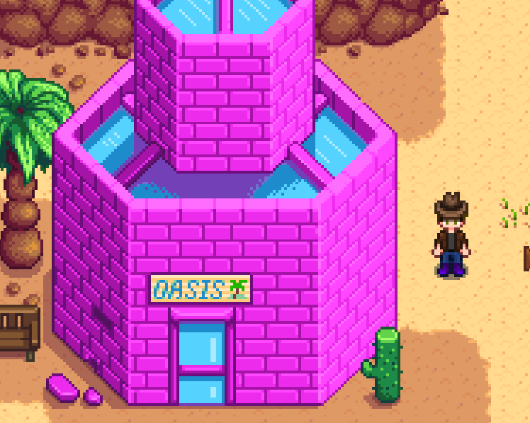

| Desert |
DesertThe Calico Desert is located far to the northwest of Pelican Town. It is not accessible until the Bus at the Bus Stop has been repaired by completing the Vault bundles at the Community Center. Once repaired, Pam will return to work as the Bus driver. A ticket to ride the bus to the desert costs 500g each time, although the return trip is free. Tickets can only be purchased when Pam is present at the Bus (10:00 am - 5:00 pm). Coconuts and Cactus Fruits can be found throughout the area, along with a number of fellable trees. Oasis Oasis is a store located in The Desert. Sandy works here selling a unique selection of seeds. The fourth product sold changes each day. The path in the back leads to the Casino, run by Mr. Qi, which is accessible after completion of the quest "The mysterious Qi". |